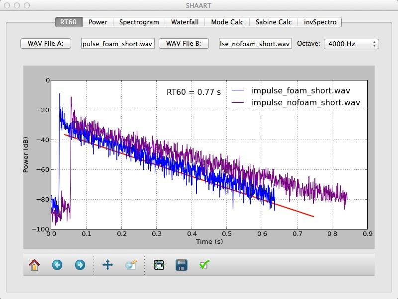
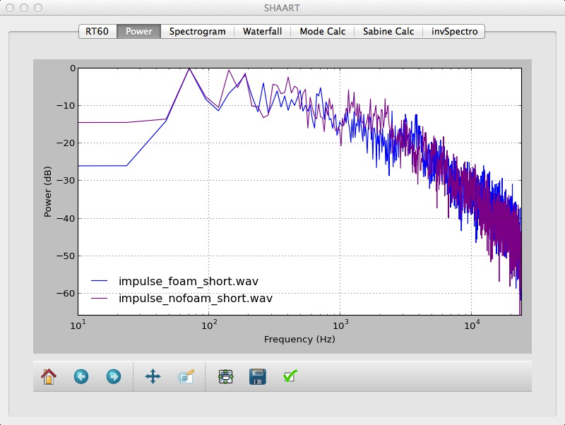
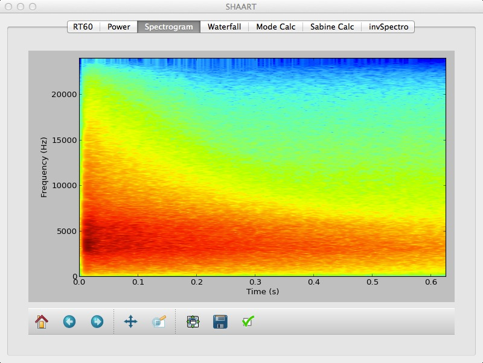
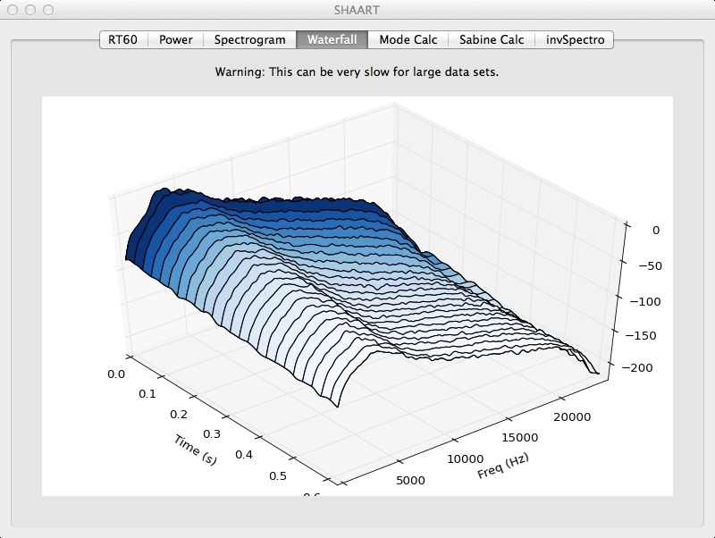
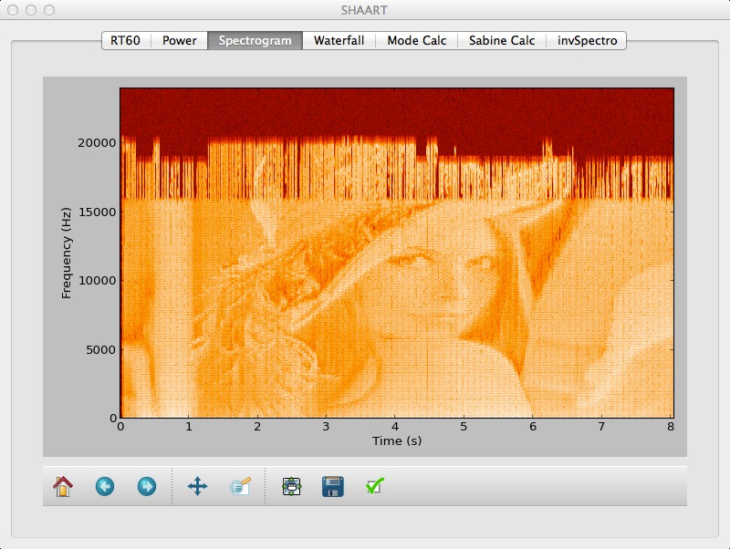
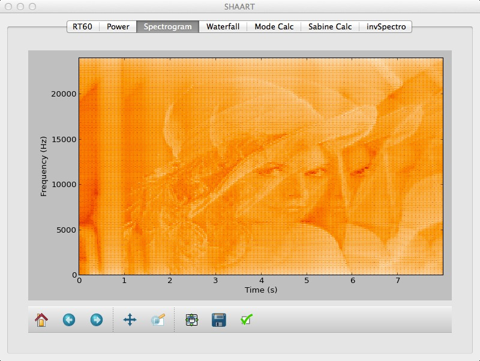
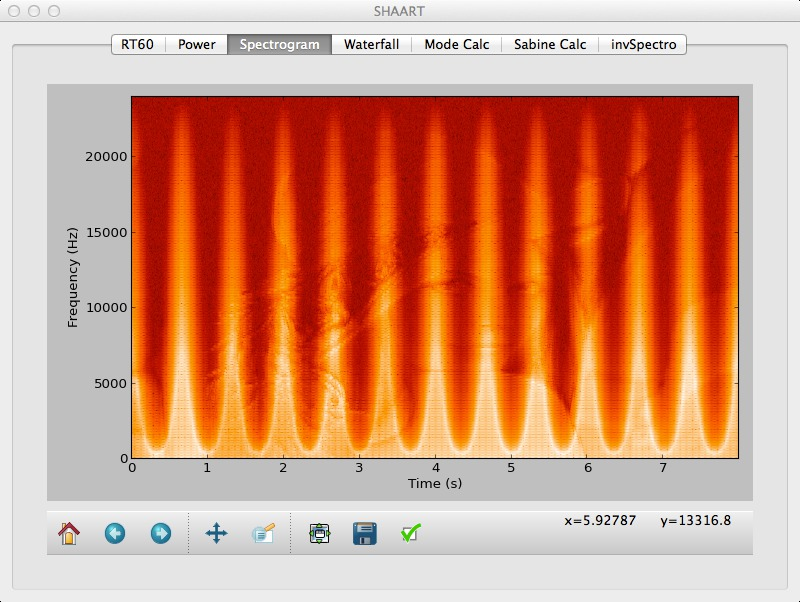

SHAART Acoustic Tools, v 0.4
About
Downloads
Release Notes
License
Screenshots
Running From Source
About
This lightweight audio analysis suite was written for educational purposes only
over a period of 4 days.
It's amazing how much you can accomplish with minimal knowledge of Python programming.
The name "SHAART" uses the author's initials (S.H.) in homage to the famous "SMAART" set of acoustics analysis tools.
That and "SHAART" is just hilarious to say, for other reasons.
(Note: "homage" = parody, derivative work = fair use = please don't sue.)
Downloads
Mac Binary Application (68 MB, Yosemite - OS X 10.10);
Source code (in Python);
Sample WAV file
(For those interested in using the source code, see the bottom of this page for further instructions.)
License
This software is both "Open Source" and "Free," released under the Jesus license: "Freely you have received, freely give"
(Matthew 10:8).
Do as you like. Modify, redistribute, etc.
I need to set this up on GitHub or somesuch -- happy to receive help doing that!
Release Notes/Issues
- Despite saying WAV file everywhere, the newest version of SHAART will read AIFF files too. And the previous issue with 24-bit PCM WAV files has been resolved.
- You don't need a WAV file to use the room mode calculator or the Sabine calculator.
- No you can't get a logarithmic frequency scale for the spectrogram. Not yet.
- For waterfall plots, it doesn't clear the window if you change the input data, resulting in multiple plots on the same page. Bug or feature?
Screenshots






invSpectro (above) created the file lena.wav, which has a spectrogram shown below:

And interestingly, if lena.wav is encoded as an MP3, then re-read and re-written as a WAV, one can see the "lossyness" of the MP3:

One can also apply various audio plugins to the sound and see the effect on the image, e.g. echo:

Wah-wah:

Reverb:

And here's an interesting one: a "leveler" effect turns Lena into a vampire:

Running from Source
Running SHAART.py from source, via Python and MacPorts:
First, we'll assume you have already installed MacPorts. (Hint: To get the XCode Command Line Tools without creating an Apple Developer account, after you install Xcode, go into a terminal shell and run "xcode-select --install". Voila!)
Then make sure you have all the ports/packages you need:
"sudo port install py27-numpy py27-scipy py27-matplotlib py27-pil py27-pyqt4 py27-pyaudio libsndfile; sudo easy_install-2.7 scikits.audiolab "
Then don't forget to run python select:
"sudo port select python python27"
Then you should be good to go! Just "tar xvfz SHAART.tar.gz", then "cd SHAART".
Finally, "./SHAART.py" should run it!
Or, for the truly ambitious:
Building a SHAART.app binary from source
Make sure you can run SHAART.py as described above, before proceeding. The build requires py2app, which used to have issues with
MacPorts, however the newer versions of MacPorts seemed to work now. So, run
"sudo port install py27-py2app"
Then cd into the SHAART source directory and run
"/opt/local/bin/python setup.py py2app"
and wait around while it builds. If successfull, you will find "SHAART.app" in a new subdirectory called "dist"!
Author: Scott Hawley